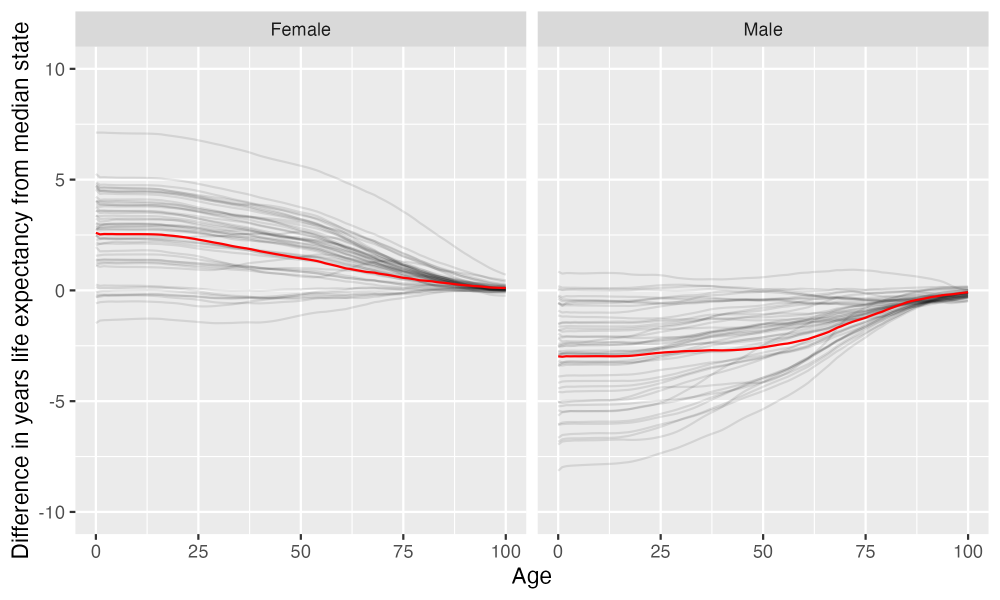

The University of Texas at San Antonio
The University of Texas at San Antonio is located in San Antonio, Texas. It is a public, 4-year or above institution.
From Wikipedia: The University of Texas at San Antonio (UTSA) is a public research university in San Antonio, Texas. With over 34,000 students across its four campuses spanning 758 acres, UTSA is the largest university in San Antonio and the eighth-largest by enrollment in the state of Texas. It is classified among “R1: Doctoral Universities – Very High Research Activity” and offers 159 degree options from its nine colleges.
Notes
These are items that bear looking into more closely: some may be problems, some may be neutral, some may be good. These are just things that are worth noticing.
California considers the state this institution is in to have one or more anti-LGBTQ+ laws. It prohibits California-sponsored travel to this state as a safety measure. See more here.
The state attorney general has sought to identify transgender individuals from state drivers license data. Family and protective services have been ordered to investigate all parents of transgender children for abuse, as well.
Overview of institution
Institution kind: Doctoral Universities: Very High Research Activity
Undergrad program: Professions plus arts & sciences, high graduate coexistence
Graduate program: Research Doctoral: Comprehensive programs, no medical/veterinary school
Enrollment profile: High undergraduate (see more details below)
Average net price for undergrads on financial aid: $11,013 (This is 80% the average cost of Harvard).
Average net price for families with $30K-48K income: $7,876 (This is $6,480 more expensive than what Harvard costs for equivalent students).
Actual price for your family: Go here to see what your family may be asked to pay. It can be MUCH lower than the average price but also higher for some.
Size and setting: Four-year, large, primarily nonresidential
In state percentage: 97.9% of first year students come from Texas
In US percentage: 99.4% of first year students come from the US
Graduation rate (within 6 years) for students seeking a Bachelors: 50.9% (this is what is usually reported as “graduation rate”)
Graduation rate (within 4 years) for students seeking a Bachelors: 28.8%
Percent of students seeking a Bachelors who transfer out of this institution: 23.6%
Student to tenure-stream faculty ratio: 35.7 (undergrads to tenure-stream faculty)
Student to faculty ratio: 24 (undergrads to all faculty)
Degrees offered: Certificate of less than 1 year, Certificate of at least 12 weeks but less than 1 year, Bachelor’s degree, Postbaccalaureate certificate, Master’s degree, Doctor’s degree: research scholarship
Schedule: Semester
Institution provides on campus housing: Yes
Dorm capacity: There are enough dorm beds for 4395 students
Freshmen required to live on campus: No
Meal plan: Yes, number of meals per week can vary
Covid vaccination requirement for students: This institution was never reported as requiring covid vaccination for students (based on info from here)
Covid vaccination requirement for faculty/staff: This institution was never reported as requiring covid vaccination for faculty and/or staff (based on info from here)
Advanced placement (AP) credits used: Yes
Disabilities: 3 percent or less of undergrads are registered as having disabilities.
Overview of location
- Abortion in this state: Most restrictive (based on https://states.guttmacher.org/policies/ as of May 10, 2023)
- Gun law stringency: F (higher grade = more stringent)
- State rep support for contraception: 33.3% of US reps from this state voted in favor of legal protections for contraception.
- State rep support for recognizing same-sex and interracial marriage: 36.1% of US reps from this state voted in favor of requiring states to recognize same-sex and interracial marriages performed in other states
- Anti-trans legislative risk: Worst (based on Erin Reed’s work, as of April 2, 2023)
- Ecological region: Edwards Plateau savanna
- Biome: Temperate Grasslands, Savannas & Shrublands
- Distance to mountains: 178.3 miles to North American Cordillera
- Climate: See overview at WeatherSpark
Similar institutions
This is using information about school size, acceptance rate, yield rate, graduation rate, cost, athletic conference, and similar metrics, but it can miss important axes of similarity (for example, culinary versus hair styling schools).
Map
Enrollment
| The University of Texas at San Antonio | Change over ≤ 11 years | Trend | Conference USA | Doctoral Universities: Very High Research Activity | |
|---|---|---|---|---|---|
| Undergrads (full time) | 22,125 (2021) |

|
↑ 198 per year |
||
| Undergrads (part time) | 7,676 (2021) |

|
↑ 215 per year |
||
| Grad students (full time) | 2,173 (2021) |

|
|||
| Grad students (part time) | 2,760 (2021) |

|
|||
| Admission rate (undergrads) | 90% (2021) |

|
|||
| Yield rate (percent of applicants offered undergraduate admission who accept) | 28% (2021) |

|
✪✪✪ Better (higher) than 55% |
✪✪✪ Better (higher) than 54% |
|
| Graduation rate (bachelors in 6 years) | 51% (2021) |

|
✪ Better (higher) than 5% |
✪ Better (higher) than 5% |
|
| Transfer out rate (bachelors) | 24% (2021) |

|
✪✪ Better (lower) than 29% |
✪ Better (lower) than 11% |
Student financing
At many universities, almost no students pay the listed tuition and fees (“sticker price”): instead, their financial aid package lowers this dramatically, but how much students pay can vary substantially based on family income and other factors. The tuition below is the average across many students receiving aid: your family may be asked to pay less or more than this.
| The University of Texas at San Antonio | Change over ≤ 11 years | Conference USA | Doctoral Universities: Very High Research Activity | |
|---|---|---|---|---|
| Average net price (for students awarded aid) | $11,013 (2020) |

|
✪✪✪✪ Better (lower) than 80% |
✪✪✪✪✪ Better (lower) than 95% |
| Undergrads getting federal aid | 66% (2021) |

|
✪✪✪✪✪ Better (higher) than 90% |
✪✪✪✪✪ Better (higher) than 94% |
| Undergrads getting any aid | 89% (2021) |

|
✪✪✪ Better (higher) than 45% |
✪✪✪✪ Better (higher) than 63% |
| Undergrads getting Pell grants | 51% (2021) |

|
✪✪✪✪✪ Better (higher) than 95% |
✪✪✪✪✪ Better (higher) than 99% |
Teaching
| The University of Texas at San Antonio | Change over ≤ 11 years | Trend | Conference USA | Doctoral Universities: Very High Research Activity | |
|---|---|---|---|---|---|
| Undergrads per tenure track instructor (lower is better) | 36 (2020) |

|
↑ 0.6 per year |
✪ Better (lower) than 6% |
✪ Better (lower) than 1% |
| Undergrads per instructor (lower is better) | 24 (2020) |

|
✪ Better (lower) than 6% |
✪ Better (lower) than 2% |
|
| Total instructors | 958 (2020) |

|
|||
| Tenure track instructors | 645 (2020) |

|
|||
| Non-tenure track instructors | 313 (2020) |

|
Student details
| The University of Texas at San Antonio | Change over ≤ 11 years | Trend | |
|---|---|---|---|
| Dorm capacity | 4,395 (2021) |

|
↑ 59 per year |
| Percent of undergrads with registered disabilities (≤3 is rounded up to 3) | 3% (2021) |

|
Institution finances
| The University of Texas at San Antonio | Change over ≤ 11 years | Trend | Conference USA | Doctoral Universities: Very High Research Activity | |
|---|---|---|---|---|---|
| Revenue from tution and fees | 26% (2021) |

|
✪✪ Better (lower) than 40% |
✪✪ Better (lower) than 37% |
|
| Revenue minus expenses | $303 M (2021) |

|
✪✪✪✪ Better (higher) than 75% |
✪✪✪ Better (higher) than 55% |
|
| Revenue | $964 M (2021) |

|
↑ $26 M per year |
||
| Expenses | $661 M (2021) |

|
↑ $16 M per year |
||
| Assets | $1.8 B (2021) |

|
↑ $43 M per year |
✪✪✪ Better (higher) than 60% |
✪✪ Better (higher) than 20% |
Graduation rates
Graduation rates for bachelor’s degrees within 150% of normal time (6 years for a 4-year degree). Note that this uses US federal demographic data: it only has two genders and a specified set of ethnicities and races. For groups with small numbers, the graduation rate may be highly variable year to year (do all three people in this group graduate this year or just two of three, for example).
| The University of Texas at San Antonio | Change over ≤ 11 years | Conference USA | Doctoral Universities: Very High Research Activity | |
|---|---|---|---|---|
| Total | 51% (2021) |

|
✪ Better (higher) than 5% |
✪ Better (higher) than 5% |
| Men | 48% (2021) |

|
✪ Better (higher) than 15% |
✪ Better (higher) than 6% |
| Women | 53% (2021) |

|
✪ Better (higher) than 5% |
✪ Better (higher) than 3% |
| American Indian or Alaska Native men | 50% (2021) |

|
✪✪✪ Better (higher) than 56% |
✪✪✪ Better (higher) than 45% |
| American Indian or Alaska Native women | 0% (2021) |

|
✪ Better (higher) than 6% |
✪ Better (higher) than 7% |
| Asian men | 45% (2021) |

|
✪ Better (higher) than 0% |
✪ Better (higher) than 3% |
| Asian women | 55% (2021) |

|
✪ Better (higher) than 0% |
✪ Better (higher) than 3% |
| Black or African American men | 50% (2021) |

|
✪✪✪ Better (higher) than 55% |
✪✪ Better (higher) than 26% |
| Black or African American women | 59% (2021) |

|
✪✪ Better (higher) than 40% |
✪✪ Better (higher) than 22% |
| Hispanic men | 49% (2021) |

|
✪ Better (higher) than 15% |
✪ Better (higher) than 12% |
| Hispanic women | 54% (2021) |

|
✪ Better (higher) than 10% |
✪ Better (higher) than 6% |
| Native Hawaiian or other Pacific Islander men | 50% (2021) |

|
✪✪✪ Better (higher) than 56% |
✪✪ Better (higher) than 38% |
| Native Hawaiian or other Pacific Islander women | 75% (2021) |

|
✪✪✪ Better (higher) than 57% |
✪✪✪ Better (higher) than 46% |
| White men | 46% (2021) |

|
✪ Better (higher) than 5% |
✪ Better (higher) than 4% |
| White women | 50% (2021) |

|
✪ Better (higher) than 5% |
✪ Better (higher) than 1% |
| Two or more races men | 54% (2021) |

|
✪✪✪ Better (higher) than 53% |
✪ Better (higher) than 18% |
| Two or more races women | 48% (2021) |

|
✪✪ Better (higher) than 21% |
✪ Better (higher) than 10% |
| Nonresident alien men | 52% (2021) |

|
✪✪ Better (higher) than 30% |
✪ Better (higher) than 11% |
| Nonresident alien women | 61% (2021) |

|
✪ Better (higher) than 15% |
✪ Better (higher) than 10% |
Freshmen demographics
Demographic data for first time degree-seeking students. Note that this uses US federal demographic data: it only has two genders and a specified set of ethnicities and races.
| The University of Texas at San Antonio | Change over ≤ 11 years | |
|---|---|---|
| Men (percent freshmen) | 44% (2021) |

|
| Women (percent freshmen) | 56% (2021) |

|
| American Indian or Alaska Native men (percent freshmen) | 0.0% (2021) |

|
| American Indian or Alaska Native women (percent freshmen) | 0.0% (2021) |

|
| Asian men (percent freshmen) | 3.3% (2021) |

|
| Asian women (percent freshmen) | 3.2% (2021) |

|
| Black or African American men (percent freshmen) | 3.4% (2021) |

|
| Black or African American women (percent freshmen) | 5.1% (2021) |

|
| Hispanic men (percent freshmen) | 26% (2021) |

|
| Hispanic women (percent freshmen) | 36% (2021) |

|
| Native Hawaiian or Other Pacific Islander men (percent freshmen) | 0.1% (2021) |

|
| Native Hawaiian or Other Pacific Islander women (percent freshmen) | 0.1% (2021) |

|
| White men (percent freshmen) | 8.9% (2021) |

|
| White women (percent freshmen) | 8.8% (2021) |

|
| Two or more races men (percent freshmen) | 1.6% (2021) |

|
| Two or more races women (percent freshmen) | 2.0% (2021) |

|
| Race ethnicity unknown men (percent freshmen) | 0.2% (2021) |

|
| Race ethnicity unknown women (percent freshmen) | 0.4% (2021) |

|
| Nonresident alien men (percent freshmen) | 0.7% (2021) |

|
| Nonresident alien women (percent freshmen) | 0.5% (2021) |

|
Freshmen geography
| The University of Texas at San Antonio | Change over ≤ 11 years | |
|---|---|---|
| In state | 98% (2021) |

|
| US | 99% (2021) |

|
| Not reported | 0% (2021) |

|
Tenure track faculty
Tenure track faculty are those who are eligible for tenure. This includes both pre-tenure and tenured faculty. Once faculty get tenure, they are (generally) protected from being fired for intellectual reasons, helping to ensure their freedom in teaching and research. They can still lose their positions for misconduct, financial problems, not fulfilling their duties, or other reasons. Note that this chart uses US federal demographic data: it only has two genders and a specified set of ethnicities and races.
| The University of Texas at San Antonio | Change over ≤ 11 years | Trend | |
|---|---|---|---|
| Total (tenure-track count) | 645 (2020) |

|
|
| Women (tenure-track count) | 230 (2020) |

|
↑ 3.3 per year |
| Men (tenure-track count) | 415 (2020) |

|
|
| American Indian or Alaska Native (tenure-track count) | 2 (2020) |

|
↓ -0.2 per year |
| Asian (tenure-track count) | 129 (2020) |

|
↑ 4.1 per year |
| Black or African American (tenure-track count) | 20 (2020) |

|
|
| Hispanic or Latino (tenure-track count) | 110 (2020) |

|
|
| Native Hawaiian or other Pacific Islander (tenure-track count) | 0 (2020) |

|
|
| White (tenure-track count) | 327 (2020) |

|
↓ -3.6 per year |
| Two or more races (tenure-track count) | 3 (2020) |

|
|
| Nonresident alien (tenure-track count) | 25 (2020) |

|
Non-tenure track faculty
Non-tenure track faculty are not eligible for tenure. Some are hired one semester at a time, some have multi-year contracts. They typically have a higher teaching load than tenure track faculty, leaving less time for research or other creative endeavors. They are also easier to fire than tenured faculty. Sometimes they are external experts (a noted musician, a former senator) who are hired to teach some classes without the expected permanence of a tenure-track position. Note that this chart uses US federal demographic data: it only has two genders and a specified set of ethnicities and races.
| The University of Texas at San Antonio | Change over ≤ 11 years | Trend | |
|---|---|---|---|
| Total (non-tenure-track count) | 313 (2020) |

|
|
| Women (non-tenure-track count) | 160 (2020) |

|
|
| Men (non-tenure-track count) | 153 (2020) |

|
|
| American Indian or Alaska Native (non-tenure-track count) | 0 (2020) |

|
↓ -0.4 per year |
| Asian (non-tenure-track count) | 29 (2020) |

|
|
| Black or African American (non-tenure-track count) | 10 (2020) |

|
|
| Hispanic or Latino (non-tenure-track count) | 70 (2020) |

|
|
| Native Hawaiian or other Pacific Islander (non-tenure-track count) | 0 (2020) |

|
|
| White (non-tenure-track count) | 172 (2020) |

|
|
| Two or more races (non-tenure-track count) | 6 (2020) |

|
|
| Nonresident alien (non-tenure-track count) | 9 (2020) |

|
Library facilities
| The University of Texas at San Antonio | Change over ≤ 11 years | Trend | Conference USA | Doctoral Universities: Very High Research Activity | |
|---|---|---|---|---|---|
| Number of physical books | 595,201 (2021) |

|
↓ -25,470 per year |
✪ Better (higher) than 10% |
✪ Better (higher) than 9% |
| Physical library circulations per students and faculty | 1.4 (2020) |

|
✪✪✪✪ Better (higher) than 71% |
✪✪ Better (higher) than 35% |
|
| Digital library circulations per students and faculty | 149 (2020) |

|
↑ 17 per year |
✪✪✪✪✪ Better (higher) than 94% |
✪✪✪✪✪ Better (higher) than 85% |
Life expectancy
This hopefully will not be relevant for potential students, but it may be for people moving to an area longer term, such as faculty and staff choosing where to live. This uses information from US National Vital Statistics Reports for 2020; like much federal data, it assumes people are male or female. For age difference from median, it is from the median state, averaging across all genders (one consequence of this is that the difference from the median life expectancy is almost always negative for men).
- Life expectancy at birth: 79.3 years women (2.6 years over the median), 73.7 years men (3 years below the median)
- Remaining life expectancy at age 18: 61.9 years women (2.5 years over the median), 56.5 years men (2.9 years below the median)
- Remaining life expectancy at age 30: 50.3 years women (2.1 years over the median), 45.4 years men (2.8 years below the median)
- Remaining life expectancy at age 45: 36.1 years women (1.6 years over the median), 31.9 years men (2.7 years below the median)
- Remaining life expectancy at age 60: 23 years women (1 years over the median), 19.7 years men (2.2 years below the median)
We can also plot the extra / fewer years of life expected for this state (red) compared to other states (dark gray) at each age. Again, this is normalized for the median state.

SAT scores
| The University of Texas at San Antonio | Change over ≤ 11 years | Trend | |
|---|---|---|---|
| Applicants submitting SAT | 51% (2021) |

|
|
| SAT Evidence Based Reading and Writing 25th percentile score | 510 (2021) |

|
|
| SAT Evidence Based Reading and Writing 75th percentile score | 620 (2021) |

|
|
| SAT Math 25th percentile score | 510 (2021) |

|
↑ 6.4 per year |
| SAT Math 75th percentile score | 600 (2021) |

|
ACT scores
| The University of Texas at San Antonio | Change over ≤ 11 years | Trend | |
|---|---|---|---|
| Applicants submitting ACT | 11% (2021) |

|
|
| ACT Composite 25th percentile score | 18 (2021) |

|
|
| ACT Composite 75th percentile score | 26 (2021) |

|
|
| ACT English 25th percentile score | 16 (2021) |

|
↓ -0.2 per year |
| ACT English 75th percentile score | 24 (2021) |

|
|
| ACT Math 25th percentile score | 17 (2021) |

|
↓ -0.3 per year |
| ACT Math 75th percentile score | 25 (2021) |

|